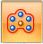

Construct a fill pattern feature
-
Choose Home tab→Selection group→Select
 .
. -
In PathFinder or the graphics window, select one or more elements to pattern.
-
Choose Home tab→Pattern group→Rectangular Pattern list→Fill

. -
Click the region(s) to pattern fill.
-
Use the Fill Pattern command bar and the dynamic edit boxes in the graphics window to define the pattern parameters.
-
On the Fill Pattern command bar, click the Accept (check mark) button to finish the feature. You can also right-click to finish the feature.
-
Click to close the Fill Pattern command.